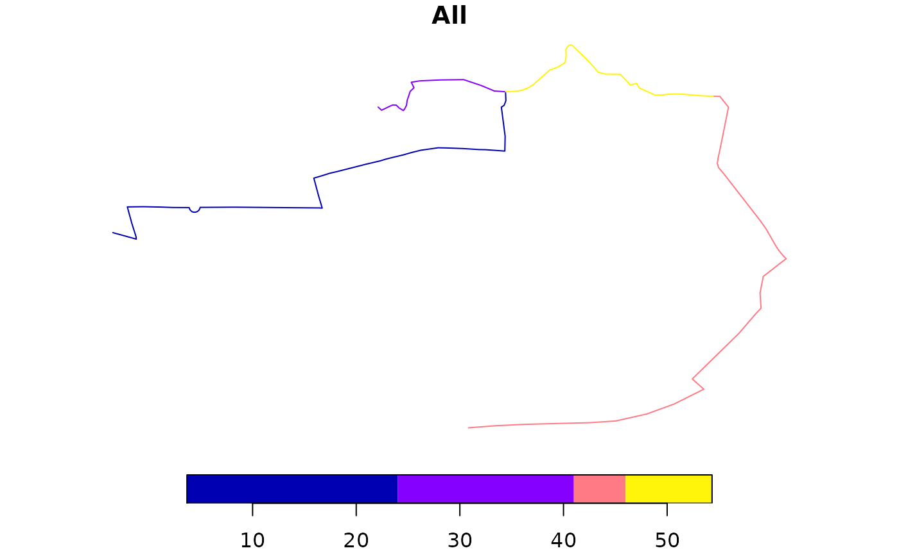
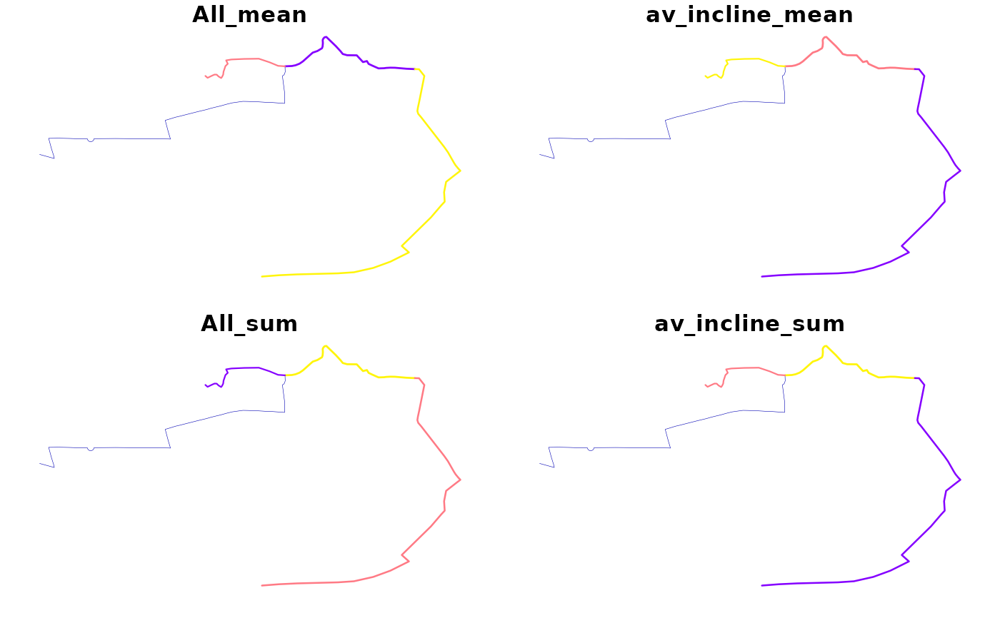

This function takes a series of overlapping lines and converts them into a single route network.
This function is intended as a replacement for overline() and is significantly faster especially on large datasets. However, it also uses more memory.
Arguments
- sl
A spatial object representing routes on a transport network
- attrib
character, column names in sl to be aggregated
- ncores
integer, how many cores to use in parallel processing, default = 1
- simplify
logical, if TRUE group final segments back into lines, default = TRUE
- regionalise
integer, during simplification regonalisation is used if the number of segments exceeds this value
- quiet
Should the the function omit messages?
NULLby default, which means the output will only be shown ifslhas more than 1000 rows.- fun
Named list of functions to summaries the attributes by?
sumis the default.list(sum = sum, average = mean)will summarise allattributes by sum and mean.
Details
The function can be used to estimate the amount of transport 'flow' at the
route segment level based on input datasets from routing services, for
example linestring geometries created with the route() function.
The overline() function breaks each line into many straight
segments and then looks for duplicated segments. Attributes are summed for
all duplicated segments, and if simplify is TRUE the segments with identical
attributes are recombined into linestrings.
The following arguments only apply to the sf implementation of overline():
ncores, the number of cores to use in parallel processingsimplify, should the final segments be converted back into longer lines? The default setting isTRUE.simplify = FALSEresults in straight line segments consisting of only 2 vertices (the start and end point), resulting in a data frame with many more rows than the simplified results (see examples).regionalisethe threshold number of rows above which regionalisation is used (see details).
For sf objects Regionalisation breaks the dataset into a 10 x 10 grid and
then performed the simplification across each grid. This significantly
reduces computation time for large datasets, but slightly increases the final
file size. For smaller datasets it increases computation time slightly but
reduces memory usage and so may also be useful.
A known limitation of this method is that overlapping segments of different lengths are not aggregated. This can occur when lines stop halfway down a road. Typically these errors are small, but some artefacts may remain within the resulting data.
For very large datasets nrow(x) > 1000000, memory usage can be significant. In these cases is is possible to overline subsets of the dataset, rbind the results together, and then overline again, to produce a final result.
Multicore support is only enabled for the regionalised simplification stage as it does not help with other stages.
References
Morgan M and Lovelace R (2020). Travel flow aggregation: Nationally scalable methods for interactive and online visualisation of transport behaviour at the road network level. Environment and Planning B: Urban Analytics and City Science. July 2020. doi:10.1177/2399808320942779 .
Rowlingson, B (2015). Overlaying lines and aggregating their values for overlapping segments. Reproducible question from https://gis.stackexchange.com. See https://gis.stackexchange.com/questions/139681/.
See also
Other rnet:
gsection(),
islines(),
rnet_breakup_vertices(),
rnet_group()
Other rnet:
gsection(),
islines(),
rnet_breakup_vertices(),
rnet_group()
Examples
sl <- routes_fast_sf[2:4, ]
sl$All <- flowlines_sf$All[2:4]
rnet <- overline(sl = sl, attrib = "All")
nrow(sl)
#> [1] 3
nrow(rnet)
#> [1] 4
plot(rnet)

rnet_mean <- overline(sl, c("All", "av_incline"), fun = list(mean = mean, sum = sum))
plot(rnet_mean, lwd = rnet_mean$All_sum / mean(rnet_mean$All_sum))

rnet_sf_raw <- overline(sl, attrib = "length", simplify = FALSE)
nrow(rnet_sf_raw)
#> [1] 151
summary(n_vertices(rnet_sf_raw))
#> Min. 1st Qu. Median Mean 3rd Qu. Max.
#> 2 2 2 2 2 2
plot(rnet_sf_raw)
 rnet_sf_raw$n <- 1:nrow(rnet_sf_raw)
plot(rnet_sf_raw[10:25, ])
rnet_sf_raw$n <- 1:nrow(rnet_sf_raw)
plot(rnet_sf_raw[10:25, ])